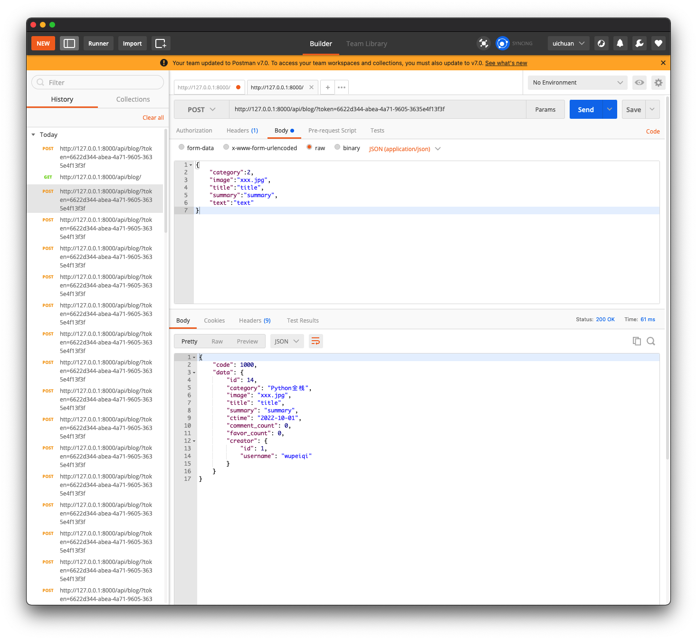
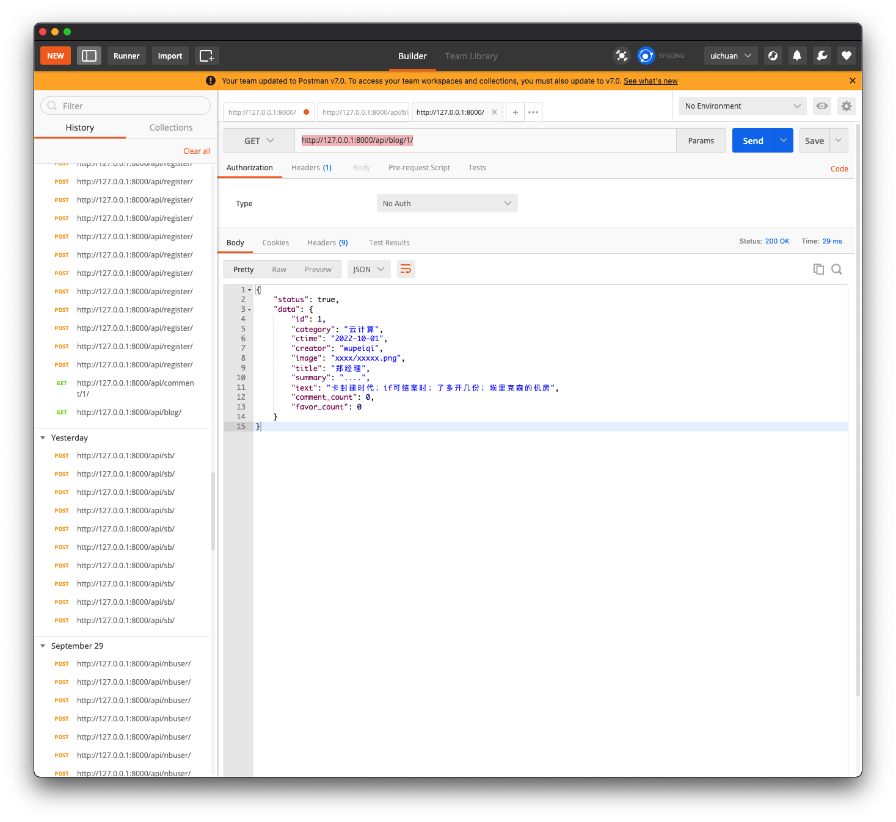
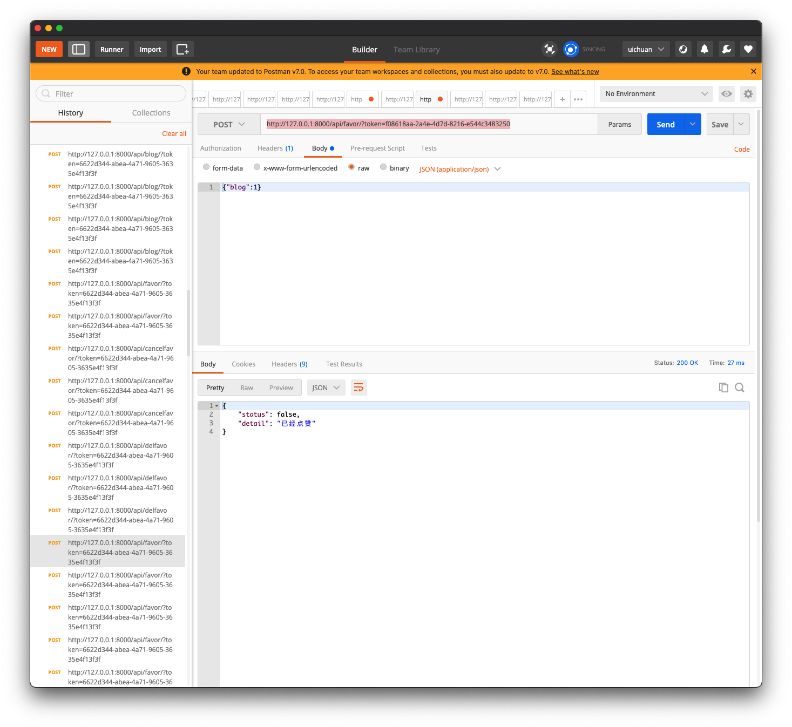
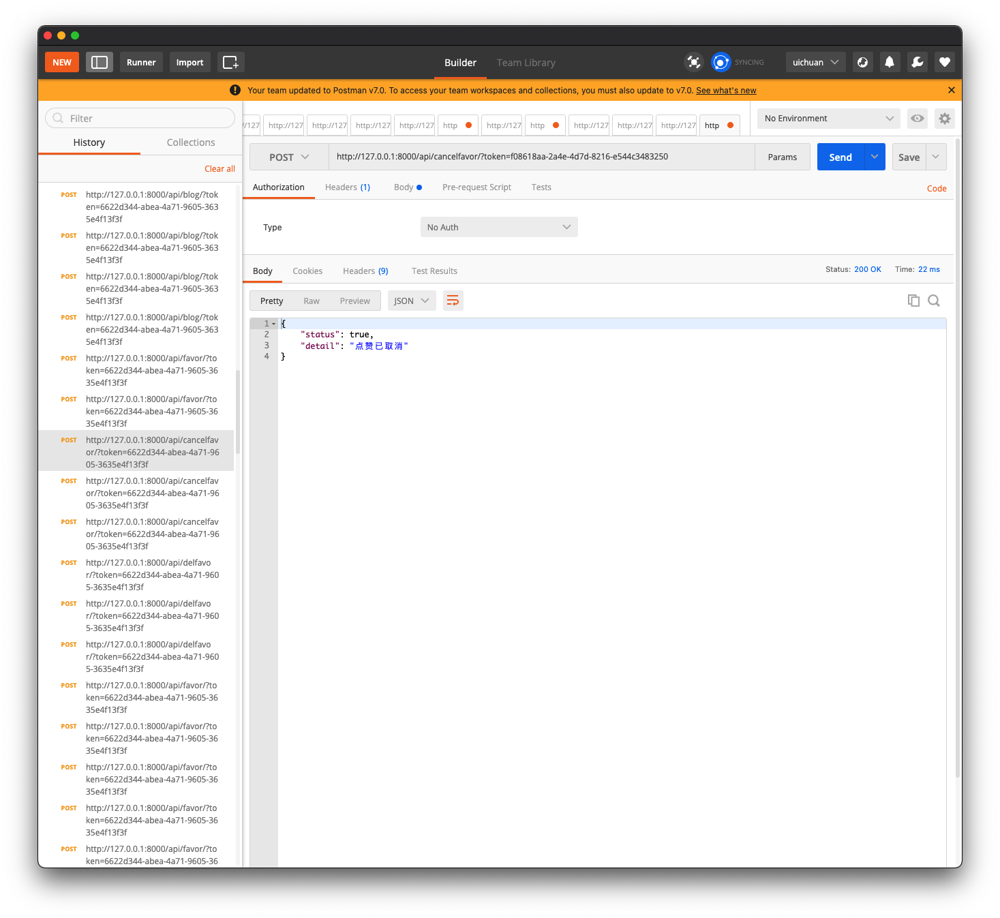

6.restframework：blog
问题：
class BlogSerializer(NbHookSerializer, serializers.ModelSerializer):
# category = serializers.CharField(source="get_category_display")
ctime = serializers.DateTimeField(format="%Y-%m-%d", read_only=True)
# creator = serializers.CharField(source='creator.username', read_only=True)
# creator_info = serializers.SerializerMethodField()
# creator_info_class = BlogInfoSerializer()
class Meta:
model = models.Blog
# fields = ['category', 'image', 'title', 'summary', 'text', 'ctime', 'creator', 'creator_name', 'creator_info']
fields = ['id', "category", "image", "title", "text", "summary", "ctime", "comment_count", "favor_count",
"creator"]
extra_kwargs = {
"comment_count": {"read_only": True},
"favor_count": {"read_only": True},
'text': {"write_only": True},
# 'creator':{"read_only":True}
}
# 钩子方法
"""
def get_creator_info(self, obj):
# obj 此时是Blog Object
# 与class Meta中首先声明的model相关
print(obj) # Blog object (2)
context = {
"creator_id": obj.creator.id,
"creator_name": obj.creator.username
}
return context
"""
def nb_category(self, obj):
return obj.get_category_display
class BlogView(APIView):
authentication_classes = [BlogAuthentication, ]
def get(self, request, *args, **kwargs):
queryset = models.Blog.objects.all().order_by('-id')
ser = BlogSerializer(instance=queryset, many=True)
context = {"status": True, "data": ser.data}
return Response(context)
def post(self, request):
"""新建博客"""
if not request.user:
return Response({"status": False, "detail": "未登录"})
ser = BlogSerializer(data=request.data)
if not ser.is_valid():
return Response({"status": False, "detail": "校验失败", "errors": ser.errors})
ser.save(creator=request.user)
return Response({"status": True, "detail": "新建博客成功", "data": ser.data})

应该是中间件拦截
[01/Oct/2022 09:05:32] "POST /api/blog/?token=6622d344-abea-4a71-9605-3635e4f13f3f HTTP/1.1" 200 89
{
"status": false,
"detail": "校验失败",
"errors": {
"creator": [
"This field is required."
]
}
}
1. 前戏
基于djangorestframework编写的一套简单的restAPI，完成了博客系统的核心功能
生成测试数据的scripts
def db(request):
v1 = models.UserInfo.objects.create(username="wupeiqi", password='123')
v2 = models.UserInfo.objects.create(username="cxr", password='123')
models.Blog.objects.create(
category=1,
image="xxxx/xxxxx.png",
title="郑经理",
summary="....",
text="卡封建时代；if可结案时；了多开几份；埃里克森的机房",
creator=v1
)
models.Blog.objects.create(
category=2,
image="xxxx/xxxxx.png",
title="震惊了",
summary="....",
text="卡封成型如居然塌方了房",
creator=v2
)
models.Comment.objects.create(content='x1asdf', blog_id=1, user_id=1)
models.Comment.objects.create(content='x1ffff', blog_id=1, user_id=2)
return HttpResponse("成功")
2.配置信息与表结构
settings.py
"""
Django settings for day15 project.
Generated by 'django-admin startproject' using Django 3.2.
For more information on this file, see
https://docs.djangoproject.com/en/3.2/topics/settings/
For the full list of settings and their values, see
https://docs.djangoproject.com/en/3.2/ref/settings/
"""
from pathlib import Path
# Build paths inside the project like this: BASE_DIR / 'subdir'.
BASE_DIR = Path(__file__).resolve().parent.parent
# Quick-start development settings - unsuitable for production
# See https://docs.djangoproject.com/en/3.2/howto/deployment/checklist/
# SECURITY WARNING: keep the secret key used in production secret!
SECRET_KEY = 'django-insecure-2uu-os!i!iapa7fsb-xe#v_1xyv+&(_c_d%nxt0d1l9*%-r60l'
# SECURITY WARNING: don't run with debug turned on in production!
DEBUG = True
ALLOWED_HOSTS = []
# Application definition
INSTALLED_APPS = [
# 'django.contrib.admin',
# 'django.contrib.auth',
# 'django.contrib.contenttypes',
# 'django.contrib.sessions',
# 'django.contrib.messages',
'django.contrib.staticfiles',
'rest_framework',
'api.apps.ApiConfig',
]
MIDDLEWARE = [
'django.middleware.security.SecurityMiddleware',
# 'django.contrib.sessions.middleware.SessionMiddleware',
'django.middleware.common.CommonMiddleware',
# 'django.middleware.csrf.CsrfViewMiddleware',
# 'django.contrib.auth.middleware.AuthenticationMiddleware',
# 'django.contrib.messages.middleware.MessageMiddleware',
'django.middleware.clickjacking.XFrameOptionsMiddleware',
]
ROOT_URLCONF = 'day15.urls'
TEMPLATES = [
{
'BACKEND': 'django.template.backends.django.DjangoTemplates',
'DIRS': [],
'APP_DIRS': True,
'OPTIONS': {
'context_processors': [
'django.template.context_processors.debug',
'django.template.context_processors.request',
# 'django.contrib.auth.context_processors.auth',
# 'django.contrib.messages.context_processors.messages',
],
},
},
]
WSGI_APPLICATION = 'day15.wsgi.application'
# Database
# https://docs.djangoproject.com/en/3.2/ref/settings/#databases
DATABASES = {
'default': {
'ENGINE': 'django.db.backends.sqlite3',
'NAME': BASE_DIR / 'db.sqlite3',
}
}
# Password validation
# https://docs.djangoproject.com/en/3.2/ref/settings/#auth-password-validators
AUTH_PASSWORD_VALIDATORS = [
{
'NAME': 'django.contrib.auth.password_validation.UserAttributeSimilarityValidator',
},
{
'NAME': 'django.contrib.auth.password_validation.MinimumLengthValidator',
},
{
'NAME': 'django.contrib.auth.password_validation.CommonPasswordValidator',
},
{
'NAME': 'django.contrib.auth.password_validation.NumericPasswordValidator',
},
]
# Internationalization
# https://docs.djangoproject.com/en/3.2/topics/i18n/
LANGUAGE_CODE = 'en-us'
TIME_ZONE = 'UTC'
USE_I18N = True
USE_L10N = True
USE_TZ = True
# Static files (CSS, JavaScript, Images)
# https://docs.djangoproject.com/en/3.2/howto/static-files/
STATIC_URL = '/static/'
# Default primary key field type
# https://docs.djangoproject.com/en/3.2/ref/settings/#default-auto-field
DEFAULT_AUTO_FIELD = 'django.db.models.BigAutoField'
from rest_framework.request import Request
REST_FRAMEWORK = {
"UNAUTHENTICATED_USER": None
}
models.py
from django.db import models
class UserInfo(models.Model):
username = models.CharField(verbose_name="用户名", max_length=32, db_index=True)
password = models.CharField(verbose_name="密码", max_length=64)
token = models.CharField(verbose_name="TOKEN", max_length=64, null=True, blank=True, db_index=True)
class Blog(models.Model):
category_choices = ((1, "云计算"), (2, "Python全栈"), (3, "Go开发"))
category = models.IntegerField(verbose_name="分类", choices=category_choices)
image = models.CharField(verbose_name="封面", max_length=255)
title = models.CharField(verbose_name="标题", max_length=32)
summary = models.CharField(verbose_name="简介", max_length=256)
text = models.TextField(verbose_name="博文")
ctime = models.DateTimeField(verbose_name="创建时间", auto_now_add=True)
creator = models.ForeignKey(verbose_name="创建者", to="UserInfo", on_delete=models.CASCADE)
comment_count = models.PositiveIntegerField(verbose_name="评论数", default=0)
favor_count = models.PositiveIntegerField(verbose_name="赞数", default=0)
class Favor(models.Model):
""" 赞 """
blog = models.ForeignKey(verbose_name="博客", to="Blog", on_delete=models.CASCADE)
user = models.ForeignKey(verbose_name="用户", to="UserInfo", on_delete=models.CASCADE)
create_datetime = models.DateTimeField(verbose_name="创建时间", auto_now_add=True)
class Meta:
constraints = [
models.UniqueConstraint(fields=['blog', 'user'], name='uni_favor_blog_user')
]
class Comment(models.Model):
""" 评论表 """
blog = models.ForeignKey(verbose_name="博客", to="Blog", on_delete=models.CASCADE)
user = models.ForeignKey(verbose_name="用户", to="UserInfo", on_delete=models.CASCADE)
content = models.CharField(verbose_name="内容", max_length=150)
create_datetime = models.DateTimeField(verbose_name="创建时间", auto_now_add=True)
urls.py
from django.urls import path
from api import views
urlpatterns = [
# path('admin/', admin.site.urls),
# path('db/', views.db),
path('api/blog/', views.BlogView.as_view()),
path('api/blog/<int:pk>/', views.BlogDetailView.as_view()),
path('api/comment/<int:blog_id>/', views.CommentView.as_view()),
path('api/register/', views.RegisterView.as_view()),
path('api/login/',views.LoginView.as_view()),
path('api/favor/',views.FavorView.as_view()),
path('api/cancelfavor/',views.CancelFavorView.as_view()),
]
views.py
from django.shortcuts import render, HttpResponse
from api import models
from rest_framework.request import Request
from rest_framework.views import APIView
from rest_framework import serializers
from rest_framework.response import Response
from ext.hook import NbHookSerializer
from rest_framework import exceptions
import uuid
from ext.auth import BlogAuthentication, NoAuthentication
ext.py
├── auth.py
└── hook.py
auth.py
from rest_framework.authentication import BaseAuthentication
from api import models
from rest_framework import exceptions
class BlogAuthentication(BaseAuthentication):
def authenticate(self, request):
"""
Authenticate the request and return a two-tuple of (user, token).
"""
token = request.query_params.get('token')
if not token:
return
instance = models.UserInfo.objects.filter(token=token).first()
if not instance:
return
return instance, token
def authenticate_header(self, request):
"""
Return a string to be used as the value of the `WWW-Authenticate`
header in a `401 Unauthenticated` response, or `None` if the
authentication scheme should return `403 Permission Denied` responses.
"""
# 认证失败时，响应头不再是403，响应头变成401
return "API"
class NoAuthentication(BaseAuthentication):
def authenticate(self, request):
"""
Authenticate the request and return a two-tuple of (user, token).
"""
raise exceptions.AuthenticationFailed({"status": False, "detail": "认证失败(NoAuthentication)"})
def authenticate_header(self, request):
"""
Return a string to be used as the value of the `WWW-Authenticate`
header in a `401 Unauthenticated` response, or `None` if the
authentication scheme should return `403 Permission Denied` responses.
"""
# 认证失败时，响应头不再是403，响应头变成401
return "API"
hook.py
from collections import OrderedDict
from rest_framework.fields import SkipField
from rest_framework.relations import PKOnlyObject
class NbHookSerializer(object):
def to_representation(self, instance):
ret = OrderedDict()
fields = self._readable_fields
for field in fields:
if hasattr(self, 'nb_%s' % field.field_name):
value = getattr(self, 'nb_%s' % field.field_name)(instance)
ret[field.field_name] = value
else:
try:
attribute = field.get_attribute(instance)
except SkipField:
continue
check_for_none = attribute.pk if isinstance(attribute, PKOnlyObject) else attribute
if check_for_none is None:
ret[field.field_name] = None
else:
ret[field.field_name] = field.to_representation(attribute)
return ret
4.博客列表展示和新建文章
"""获取博客列表"""
class BlogUserSerializers(serializers.ModelSerializer):
class Meta:
model = models.UserInfo
fields = ["id", "username"]
class BlogSerializers(NbHookSerializer, serializers.ModelSerializer):
ctime = serializers.DateTimeField(format="%Y-%m-%d", read_only=True)
creator = BlogUserSerializers(read_only=True)
class Meta:
model = models.Blog
fields = ['id', "category", "image", "title", "text", "summary", "ctime", "comment_count", "favor_count",
"creator"]
extra_kwargs = {
"comment_count": {"read_only": True},
"favor_count": {"read_only": True},
"text": {"write_only": True},
}
def nb_category(self, obj):
return obj.get_category_display()
class BlogView(APIView):
authentication_classes = [BlogAuthentication, ]
def get(self, request, *args, **kwargs):
""" 博客列表 """
# 1.读取数据库中的博客信息
queryset = models.Blog.objects.all().order_by("-id")
# 2.序列化
ser = BlogSerializers(instance=queryset, many=True)
# 3.返回
context = {"code": 1000, 'data': ser.data}
return Response(context)
def post(self, request):
if not request.user:
return Response({"code": 3000, 'error': "认证失败"})
ser = BlogSerializers(data=request.data)
if not ser.is_valid():
return Response({"code": 1002, 'error': "校验失败", 'detail': ser.errors})
ser.save(creator=request.user)
return Response({"code": 1000, "data": ser.data})
- 嵌套两个序列化器类
- 对creator信息的序列化
- 对博客信息的序列化
- 读取博客列表(get)和新建博客(post)的功能放在一个视图类中
在postman中测试：
- 查看博客列表

{
"code": 1000,
"data": [
{
"id": 13,
"category": "Python全栈",
"image": "xxx.jpg",
"title": "title",
"summary": "summary",
"ctime": "2022-10-01",
"comment_count": 0,
"favor_count": 0,
"creator": {
"id": 1,
"username": "wupeiqi"
}
},
{
"id": 12,
"category": "Python全栈",
"image": "xxx.jpg",
"title": "title",
"summary": "summary",
"ctime": "2022-10-01",
"comment_count": 0,
"favor_count": 0,
"creator": {
"id": 1,
"username": "wupeiqi"
}
},
]
}
- 新建博客

http://127.0.0.1:8000/api/blog/?token=6622d344-abea-4a71-9605-3635e4f13f3f
{
"code": 1000,
"data": {
"id": 14,
"category": "Python全栈",
"image": "xxx.jpg",
"title": "title",
"summary": "summary",
"ctime": "2022-10-01",
"comment_count": 0,
"favor_count": 0,
"creator": {
"id": 1,
"username": "wupeiqi"
}
}
}
5.博客详细
class BlogDetailSerializer(serializers.ModelSerializer):
category = serializers.CharField(source="get_category_display")
ctime = serializers.DateTimeField(format="%Y-%m-%d")
creator = serializers.CharField(source='creator.username')
class Meta:
model = models.Blog
fields = "__all__"
class BlogDetailView(APIView):
def get(self, request, *args, **kwargs):
# 获取id
pk = kwargs.get('pk')
# 根据id获取对象
instance = models.Blog.objects.filter(id=pk).first()
if not instance:
return Response({"status": False, "detail": None})
ser = BlogDetailSerializer(instance=instance)
context = {"status": True, "data": ser.data}
return Response(context)
查看哪一片博客的详细信息，博客id的参数在url中传递
http://127.0.0.1:8000/api/blog/1/
参考路由中参数预留的位置
path('api/blog/<int:pk>/', views.BlogDetailView.as_view()),
在postman中测试：

http://127.0.0.1:8000/api/blog/1/
{
"status": true,
"data": {
"id": 1,
"category": "云计算",
"ctime": "2022-10-01",
"creator": "wupeiqi",
"image": "xxxx/xxxxx.png",
"title": "郑经理",
"summary": "....",
"text": "卡封建时代；if可结案时；了多开几份；埃里克森的机房",
"comment_count": 0,
"favor_count": 0
}
}
6.评论列表与发布评论
同样是将两个功能写在同一个视图类中
- 评论列表(get)
- 发布评论(post)，发布评论要求通过认证组件，（token）
class CommentSerializer(NbHookSerializer, serializers.ModelSerializer):
class Meta:
model = models.Comment
fields = ['id', 'content', 'user']
extra_kwargs = {
"id": {"read_only": True},
"user": {"read_only": True},
}
def nb_user(self, obj):
return obj.user.username
class CommentView(APIView):
authentication_classes = [BlogAuthentication]
def get(self, request, *args, **kwargs):
""" 评论列表"""
blog_id = kwargs.get('blog_id')
print(blog_id)
queryset = models.Comment.objects.filter(blog_id=blog_id)
# 再次序列化
ser = CommentSerializer(instance=queryset, many=True)
context = {
"status": True,
"details": ser.data
}
return Response(context)
def post(self, request, *args, **kwargs):
"""
- 认证成功之后才能登陆，认证组件，验证token
- 写在哪个位置？
"""
"""
发布评论，同时携带blog_id
url中 /api/comment/1/
请求体中 {"content":"博客正文内容"}
"""
blog_id = kwargs.get('blog_id')
# 验证用户是否已登陆
if not request.user:
return Response({"status": False, "detail": "请登陆后再评论"})
blog_obj = models.Blog.objects.filter(id=blog_id).first()
if not blog_obj:
return Response({"status": False, "detail": "博客不存在"})
ser = CommentSerializer(data=request.data)
if not ser.is_valid():
return Response({"status": False, "detail": "校验失败", 'errors': ser.errors})
ser.save(blog=blog_obj, user=request.user)
return Response({"status": True, "detail": "评论发布成功", 'data': ser.data})
在postman中的测试
对于查看评论，需要传入博客id，来查询具体是哪一篇博客的评论信息
url中的参数预留
path('api/comment/<int:blog_id>/', views.CommentView.as_view()),
- 查看评论

http://127.0.0.1:8000/api/comment/1/
{
"status": true,
"details": [
{
"id": 1,
"content": "x1asdf",
"user": "wupeiqi"
},
{
"id": 2,
"content": "x1ffff",
"user": "cxr"
},
{
"id": 3,
"content": "nice",
"user": "wupeiqi"
},
{
"id": 4,
"content": "nice",
"user": "wupeiqi"
}
]
}
- 发布评论

http://127.0.0.1:8000/api/comment/1/?token=6622d344-abea-4a71-9605-3635e4f13f3f
{
"status": true,
"detail": "评论发布成功",
"data": {
"id": 5,
"content": "nice",
"user": "wupeiqi"
}
}
7.注册
class RegisterSerializer(serializers.ModelSerializer):
confirm_password = serializers.CharField(write_only=True)
class Meta:
model = models.UserInfo
fields = ['id', 'username', 'password', 'confirm_password']
extra_kwargs = {
'password': {"write_only": True},
'id': {"read_only": True}
}
"""
def validate_password(self, value):
return value
"""
def validate_confirm_password(self, value):
password = self.initial_data.get('password')
if password != value:
raise exceptions.ValidationError("密码不一致")
return value
class RegisterView(APIView):
def post(self, request):
"""
提交数据
- username : xx
- password : xx
- confirm_password :xx
"""
ser = RegisterSerializer(data=request.data)
if ser.is_valid():
confirm_password = ser.validated_data.pop("confirm_password")
ser.save()
return Response({"status": True, "errors": None, "detail": ser.data})
else:
return Response({"status": False, "errors": "注册失败", "detail": ser.errors})
在postman中的测试

http://127.0.0.1:8000/api/register/
{"username":"uic","password":"123","confirm_password":"123"}
{
"status": true,
"errors": null,
"detail": {
"id": 9,
"username": "uic"
}
}
8.登陆
class LoginSerializer(serializers.ModelSerializer):
class Meta:
model = models.UserInfo
fields = ['username', 'password']
class LoginView(APIView):
def post(self, request):
request.data # {"username":xx,"password":xxx}
ser = LoginSerializer(data=request.data)
if not ser.is_valid():
return Response({"status": False, "detail": "login unsuccess"})
instance = models.UserInfo.objects.filter(**ser.validated_data).first()
if not instance:
return Response({"status": False, "detail": "用户名或密码错误"})
token = str(uuid.uuid4())
instance.token = token
instance.save()
return Response({"status": True, "detail": {"login": "登陆成功", "token": token}})
在postman中的测试

http://127.0.0.1:8000/api/login/
{
"status": true,
"detail": {
"login": "登陆成功",
"token": "f08618aa-2a4e-4d7d-8216-e544c3483250"
}
}
9.点赞
class FavorSerializer(serializers.ModelSerializer):
class Meta:
model = models.Favor
fields = ['blog']
class FavorView(APIView):
"""
- 给哪篇博客点赞
- 点赞的用户
- 查询->不存在赞的记录->添加
- 如果已经存在记录，不进行增加赞
"""
authentication_classes = [BlogAuthentication, NoAuthentication]
def post(self, request):
ser = FavorSerializer(data=request.data)
if not ser.is_valid():
return Response({"status": False, "detail": "校验失败", "errors": ser.errors})
# 查询，存在的话就不再点赞
res = models.Favor.objects.filter(user=request.user, blog=ser.validated_data.get("blog")).exists()
if res:
return Response({"status": False, "detail": "已经点赞"})
# models.Favor.objects.filter(user=request.user, **ser.validated_data)
ser.save(user=request.user)
return Response({"status": True, "data": ser.data, "detail": "点赞成功"})
在postman中的测试

http://127.0.0.1:8000/api/favor/?token=f08618aa-2a4e-4d7d-8216-e544c3483250
{
"status": false,
"detail": "已经点赞"
}
10.取消赞
class CancelFavorSerializer(serializers.ModelSerializer):
class Meta:
model = models.Favor
fields = ['blog']
class CancelFavorView(APIView):
authentication_classes = [BlogAuthentication, NoAuthentication]
def post(self, request):
ser = CancelFavorSerializer(data=request.data)
if not ser.is_valid():
return Response({"status": False, "detail": "校验失败", "errors": ser.errors})
res = models.Favor.objects.filter(user=request.user, blog=ser.validated_data.get("blog")).exists()
if not res:
return Response({"status": False, "detail": "还未点赞"})
models.Favor.objects.filter(blog=ser.validated_data.get("blog"), user=request.user).delete()
return Response({"status": True, "detail": "点赞已取消"})
在postman中的测试

http://127.0.0.1:8000/api/cancelfavor/?token=f08618aa-2a4e-4d7d-8216-e544c3483250
{
"status": true,
"detail": "点赞已取消"
}
11.整体项目结构
.
├── api
│ ├── __init__.py
│ ├── __pycache__
│ │ ├── __init__.cpython-310.pyc
│ │ ├── apps.cpython-310.pyc
│ │ ├── models.cpython-310.pyc
│ │ └── views.cpython-310.pyc
│ ├── admin.py
│ ├── apps.py
│ ├── migrations
│ │ ├── 0001_initial.py
│ │ ├── __init__.py
│ │ └── __pycache__
│ │ ├── 0001_initial.cpython-310.pyc
│ │ └── __init__.cpython-310.pyc
│ ├── models.py
│ ├── tests.py
│ └── views.py
├── day15
│ ├── __init__.py
│ ├── __pycache__
│ │ ├── __init__.cpython-310.pyc
│ │ ├── settings.cpython-310.pyc
│ │ ├── urls.cpython-310.pyc
│ │ └── wsgi.cpython-310.pyc
│ ├── asgi.py
│ ├── settings.py
│ ├── urls.py
│ └── wsgi.py
├── db.sqlite3
├── ext
│ ├── __pycache__
│ │ ├── auth.cpython-310.pyc
│ │ └── hook.cpython-310.pyc
│ ├── auth.py
│ └── hook.py
└── manage.py